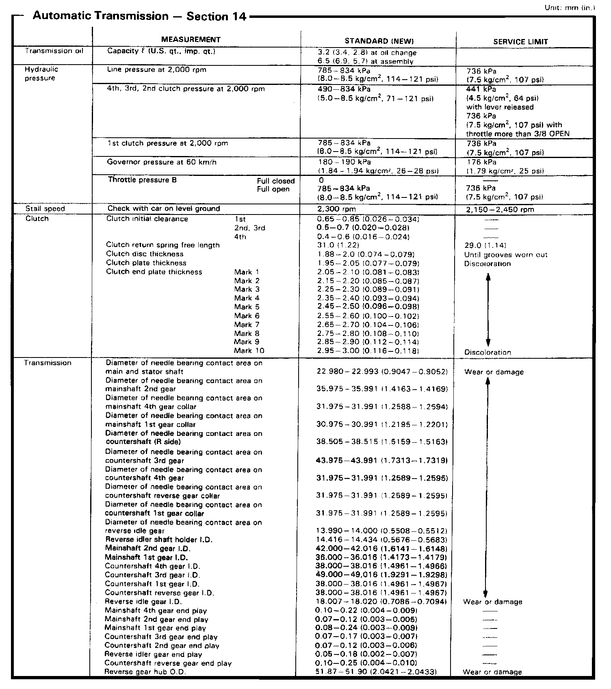
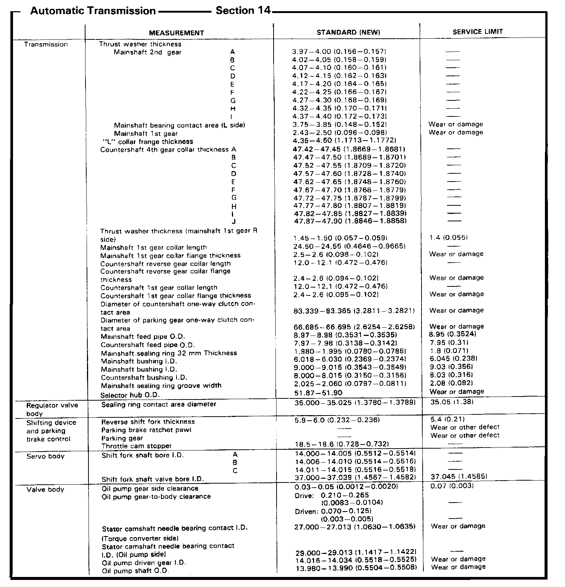
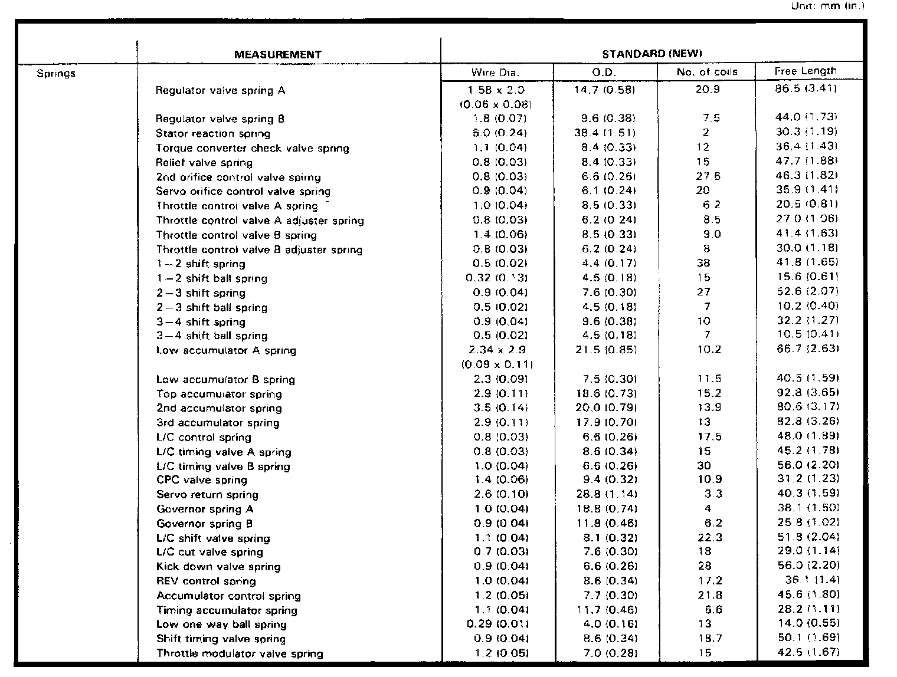
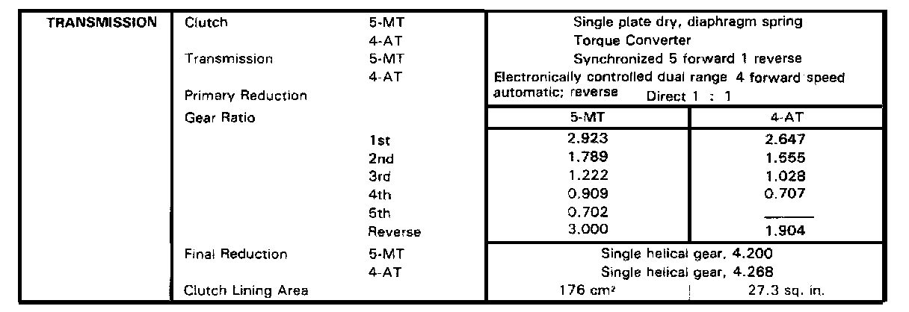

A/T Technical Data
L5 4-spd A/T, Line Pressure, Clutch Clearance & Shaft Diameters:

L5 4-spd A/T, Thrust Washer Thickness & Valve/Servo Body Clearance:

L5 4-spd A/T, Springs Dimensions:

Manual/Automatic Transmission Gear Ratios:
